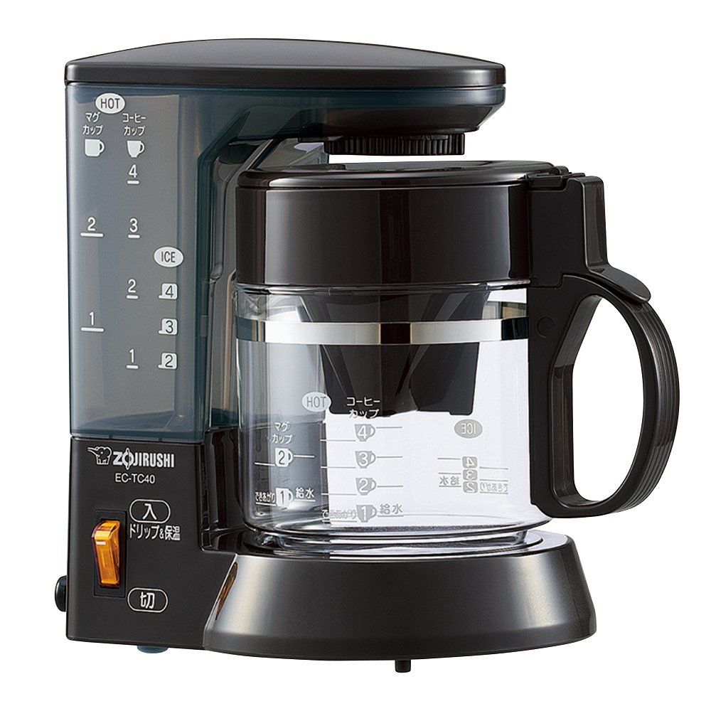

昨日、徹夜でtopページのデザインを終わらせたあとオフィスで爆睡してて、休日出勤してきたCEOに起こされるという最高の目覚めでした。 最近新しくオフィスに買ってもらったコーヒーメーカーで作ったコーヒーを飲みながら、朝ごはんのカレーを食べました。

これで入れるコーヒー、口あたりが良くてなかなか美味しんですよ。
コーヒーを味わったところで、仕事スタート！！
記事ページはやはり、アーカイブがみれた方がいいだろうということで２カラムに。
図書館便りとかの扱いに困り悪戦苦闘しながらも、カテゴリーを分ける方針で解決。
あとは、topページのデザインを使い回すだけなので、classを付与して爆速コーディング！！
最後に右側のアーカイブカラムをいい感じにして、、、はい、完成しました。
ゆーたら、このページのことです。何個かブログを参考にしつつ、フィーリングでコーディング！！
よくある参考になる良質デザイン20選みたいなやつ、すごすぎてむしろ参考にんらないんですよね。笑
ありきたりなデザインになってしまったけど、Simple is Best. ということで。
やっぱり、このマテリアルデザインのpaperかcardかわからないですけど、これめっちゃ好きなんですよね。
シンプルやけどめっちゃおしゃれ。ではでは、続きも頑張ってコーディングしていきます！！
あ、このページのレイアウトがずれてますね、、、はい、気が向いたらなおしておきます、、
TODO：レイアウト崩れてるのを直す
直しました！！